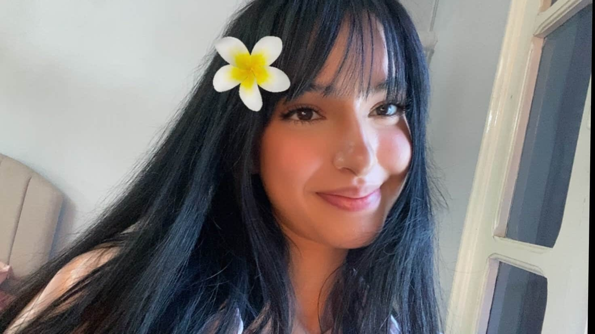
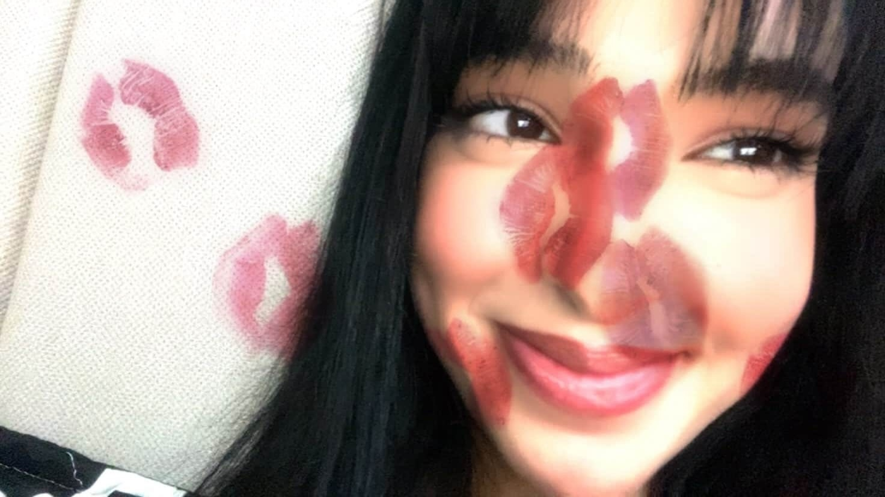
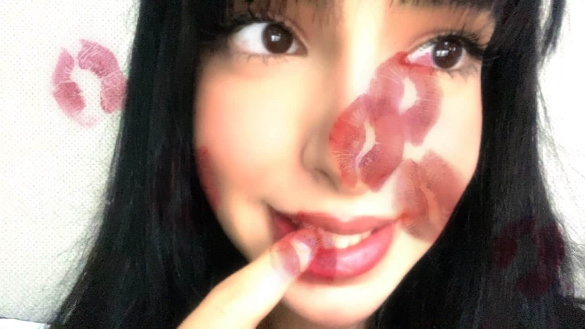

I can't imagine my life without you by my side.
Sidra, you make every day extraordinary. 💕



"You are my today and all of my tomorrows."
"In your eyes, I found my favorite color."
"Distance means so little when someone means so much."
My dearest Sidra,
It’s strange how someone can become so important to you in such a quiet, effortless way. You slipped into my days without warning… and now even the simplest moments feel different because of you.
Sometimes I catch myself thinking about you out of nowhere, the way you talk, the softness in your energy, even the little things like how much you love lilies and those gentle shades of pink… and it all just makes me smile without trying.
Distance is there, I know. But it doesn’t feel like something that keeps us apart, it just makes what we have feel more meaningful, more intentional. Like every word, every moment we share actually matters.
I don’t know what the future holds, and maybe that’s scary. But I do know that right now, in this moment, I’m grateful for you. For your kindness, your laughter, your presence in my life. You’ve become a part of my world in a way that feels so natural, so right.
And the truth is… I’m not just enjoying this for what it is now. I find myself wondering where this could go, how much more there is to discover about you, how many more memories we haven’t even created yet.
You’ve become something rare to me, Sidra. Something I don’t want to rush, but definitely don’t want to lose.
So, let's cherish every moment and make every day extraordinary together.
Virtual Hugs Sent
0